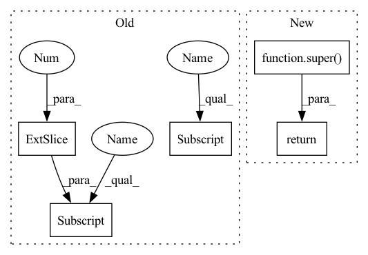

Pattern ID :36062

Before Change
beta = 1e-4
kl_loss = torch.mean(radius**2 - torch.log(radius) - 1)
self._regularisation_loss += beta * kl_loss
return torch.atan2(x[:,1], x[:,0]).unsqueeze(1) + np.pi // atan(y,x) -> [-pi, pi]
//return torch.sigmoid(x[:,:1]) * 2 * np.pi
After Change
def _forward(self, x):
// Transform outputs to angle and prepare prediction
res = super()._forward(x)
angle = res[:,0].unsqueeze(1)
kappa = res[:,1]
sigma = torch.sqrt(1. / kappa)
beta = 1e-3
kl_loss = torch.mean(sigma**2 - torch.log(sigma) - 1)
self._regularisation_loss += beta * kl_loss
return angle
class ZenithReconstruction(Task):
In pattern: SUPERPATTERN
Frequency: 3
Non-data size: 5
Instances
Fragment ID: 102344681
Project Name: icecube/graphnet
Commit Name: c2cefa65450c1e10b541e9b0538358e02e486a06
Time: 2021-11-16
Author: andreas.sogaard@gmail.com
File Name: src/gnn_reco/models/task/reconstruction.py
M Class Name: AzimuthReconstruction
N Class Name: AzimuthReconstruction
M Method Name: _forward(2)
N Method Name: _forward(2)
M Parent Class: AzimuthReconstructionWithKappa
N Parent Class: Task
M File Name: src/gnn_reco/models/task/reconstruction.py
N File Name: src/gnn_reco/models/task/reconstruction.py
M Start Line: 14
M End Line: 18
N Start Line: 25
N End Line: 32
'>
Before Change
beta = 1e-4
kl_loss = torch.mean(radius**2 - torch.log(radius) - 1)
self._regularisation_loss += beta * kl_loss
return torch.atan2(x[:,1], x[:,0]).unsqueeze(1) + np.pi // atan(y,x) -> [-pi, pi]
//return torch.sigmoid(x[:,:1]) * 2 * np.pi
After Change
def _forward(self, x):
// Transform outputs to angle and prepare prediction
res = super()._forward(x)
angle = res[:,0].unsqueeze(1)
kappa = res[:,1]
sigma = torch.sqrt(1. / kappa)
beta = 1e-3
kl_loss = torch.mean(sigma**2 - torch.log(sigma) - 1)
self._regularisation_loss += beta * kl_loss
return angle
class ZenithReconstruction(Task):
'>
Fragment ID: 102344680
Project Name: graphnet-team/graphnet
Commit Name: c2cefa65450c1e10b541e9b0538358e02e486a06
Time: 2021-11-16
Author: andreas.sogaard@gmail.com
File Name: src/gnn_reco/models/task/reconstruction.py
M Class Name: AzimuthReconstruction
N Class Name: AzimuthReconstruction
M Method Name: _forward(2)
N Method Name: _forward(2)
M Parent Class: AzimuthReconstructionWithKappa
N Parent Class: Task
M File Name: src/gnn_reco/models/task/reconstruction.py
N File Name: src/gnn_reco/models/task/reconstruction.py
M Start Line: 14
M End Line: 18
N Start Line: 25
N End Line: 32
'>
Before Change
// determine positive; do not check with == since the labels are floats
pos_mask = labels > 0.5
// get indices of positives, shape: (nnz, ndim)
batch_ind = pos_mask.nonzero()[:, 0]
// select rows of negatives
negative_scores = predictions[batch_ind]
// select positive scores
positive_scores = predictions[pos_mask]
return self(pos_scores=positive_scores, neg_scores=negative_scores)
// docstr-coverage: inherited
def process_slcwa_scores(
After Change
predictions = predictions - pos_mask.type_as(predictions) * self.margin
// divide by temperature
predictions = predictions / self.inverse_softmax_temperature
return super().process_lcwa_scores(
predictions=predictions,
labels=labels,
label_smoothing=label_smoothing,
'>
Fragment ID: 102344683
Project Name: pykeen/pykeen
Commit Name: d7ee986026065997398ab72152f0365224d9e374
Time: 2022-05-17
Author: berrendorf@dbs.ifi.lmu.de
File Name: src/pykeen/losses.py
M Class Name: InfoNCELoss
N Class Name: InfoNCELoss
M Method Name: process_lcwa_scores(5)
N Method Name: process_lcwa_scores(5)
M Parent Class: CrossEntropyLoss
N Parent Class: SetwiseLoss
M File Name: src/pykeen/losses.py
N File Name: src/pykeen/losses.py
M Start Line: 1358
M End Line: 1368
N Start Line: 1235
N End Line: 1245